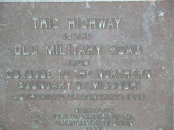
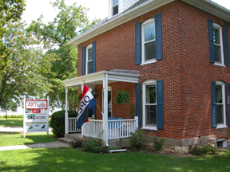
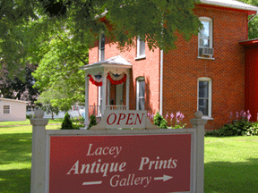

The Military Road Era
Lyman Dillin in 1840 plowed a furrow from Dubuque to Iowa City, marking a trail for military use. Now called Highway 1, this military road became the avenue of commerce. By 1847, a commercial area running along the ridgeline of the hill (First Street) saw general stores and a blacksmith shop open. Blocks were laid out north and south on either side of the military road.
  
Within a few years, construction began to change from logs to wood frame and brick buildings. Many existing buildings were influenced by the Military Road era.
Continue to The Railroad Era
home